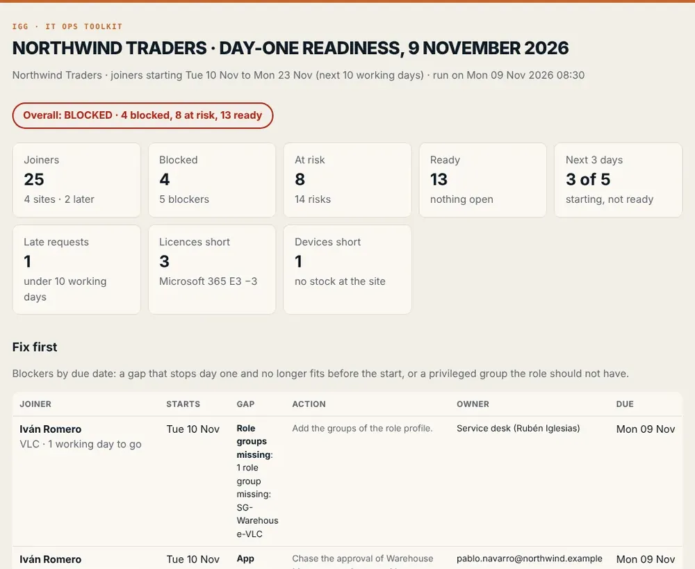

Una cuenta creada copiando a un compañero que antes trabajaba en IT llega con un grupo de administradores de Exchange, antes de que su dueño haya empezado. Es una de las cuatro altas bloqueadas de las 25 que empiezan en las próximas dos semanas, según el control del primer día que acompaña a este post, una herramienta que se ejecuta con datos de ejemplo de una empresa inventada de distribución y trading con cuatro sedes, revisada el lunes 9 de noviembre con los problemas puestos a propósito: 13 altas listas, 8 en riesgo y 4 bloqueadas, y el conjunto bloqueado.
El primer día es la primera impresión que IT da a una persona nueva, y se decide en las dos semanas anteriores. RR. HH. sabe las fechas de incorporación, Entra ID sabe las cuentas, Intune sabe los portátiles, el inventario sabe el stock y la herramienta de ITSM sabe las peticiones de acceso, y nadie lo mira todo junto hasta que la persona está sentada en su puesto. La herramienta compara cada alta con el perfil de su puesto, un fichero con los grupos, la licencia, las aplicaciones, los buzones compartidos y si el puesto necesita móvil. Copiar a un usuario modelo es rápido pero trae consigo la historia del compañero, así que un grupo privilegiado que el puesto no incluye es un bloqueo, quede el tiempo que quede.
Una petición el viernes para el martes y un MacBook sin stock
La petición de un operario de almacén llegó el viernes para el martes, y el lunes todavía le faltan el grupo de su puesto y el acceso al sistema de almacén. Se pidió un MacBook en una oficina sin ninguno en stock, y un pedido tarda más que los días que quedan. El portátil de alguien que empieza mañana está inscrito pero no cumple porque BitLocker, el cifrado del disco, sigue pendiente.
Cada solución tiene los días laborables que necesita, desde uno para un grupo hasta cinco para pedir un equipo. Un hueco pasa a bloqueo cuando su solución ya no cabe antes de la incorporación, o cuando la persona empieza en tres días laborables o menos; si no, es un riesgo con responsable y fecha límite. Cada alta tiene una cuenta atrás en días laborables, porque la fecha de incorporación es el único plazo que no se mueve.
Dos licencias libres para cinco altas
En la bolsa de licencias quedan dos libres para cinco altas. La bolsa de licencias y el stock de equipos se reparten por orden de incorporación, así que la previsión dice a quién le va a faltar, no solo cuántos faltan. Otra cuenta no tiene ubicación de uso, el país que Microsoft 365 necesita, así que su licencia nunca se asignó.
La cuenta antigua de una recontratación está deshabilitada y alguien creó una segunda con el mismo número de empleado, cuando había que reutilizar la antigua. Un trader que empieza el lunes que viene todavía no tiene aprobado el terminal de datos de mercado. El control también cubre cómo registrará cada persona el MFA, con un pase de acceso temporal, un código provisional, para el primer inicio de sesión.
Cómo usarlo con datos reales
Cada alta se cruza con una cuenta por número de empleado, después por el UPN previsto y después por el nombre. El repositorio incluye un exportador de solo lectura en PowerShell para Microsoft Graph que lee las cuentas, los responsables, los grupos, los métodos de autenticación, las licencias y los equipos de Intune con inicio de sesión interactivo, y acepta exportaciones del inventario de Jamf Pro con las mismas columnas. Funciona con Python solo con la librería estándar y genera un informe web con la lista de lo que hay que arreglar primero y un tablero con la cuenta atrás, un dosier para la reunión semanal de altas con columnas de responsable, fecha y hecho, y ficheros CSV con el estado de cada alta, los huecos, la previsión de licencias y equipos y las acciones. Incluye 15 tests y un runbook con la reunión semanal, qué significa estar listo, los usuarios modelo, las recontrataciones y las peticiones tardías. La revisión mensual de accesos publicada antes en la serie encuentra un grupo de administradores tres meses después; este control está pensado para pararlo el primer día. La empresa y sus altas son ficticias.
De dónde sale
La herramienta nace de llevar las altas de usuarios en tiendas y oficina central, de Entra ID, Intune y Jamf Pro, de automatizar con PowerShell y Microsoft Graph, y de ser el responsable de IT de una oficina que pasó de unas 15 a más de 120 personas. Las lecciones que me quedo: una petición tardía es una conversación con RR. HH., no un fin de semana heroico, y estar listo tiene que significar lo mismo para todas las altas, y estar escrito.
¿Quieres llevarlo a tu entorno o adaptarlo a tu caso? Escríbeme y lo vemos.
Tech Career Lab · newsletter
¿Te ha servido? Cada dos semanas envío una idea práctica para perfiles IT: LinkedIn, proyectos, networking y procesos de selección.
Apúntate y llévate las 33 ideas →